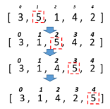

Exercise 0: Дано масив 30 випадкових цілих чисел. Підрахувати скільки було обмінів під час сортування бульбашкою
Exercise 0Exercise 1: Дано масив 30 випадкових цілих чисел. Підрахувати скільки було обмінів під час сортування змішуванням.
Exercise 1Exercise 2: Дано масив 30 випадкових цілих чисел. Підрахувати скільки було обмінів під час сортування включеннями.
Exercise 2Exercise 3: Для розглянутих методів сортування спробувати вивести етапи сортування шляхом виведення відповідних таблиць за зразком.
Тобто кожного разу після обміну елементів вивести поточний стан масиву на екран.
Exercise 3Exercise 4: Дано масив імен. Застосовуючи відповідне сортування та бінарний пошук визначити, чи є у масиві ім’я «Olga» і під яким індексом.
Exercise 4Exercise 5: Дано масив імен. Застосовуючи відповідне сортування та бінарний пошук визначити, чи є у масиві ім’я довжиною 5 символів і під яким індексом.
Exercise 5